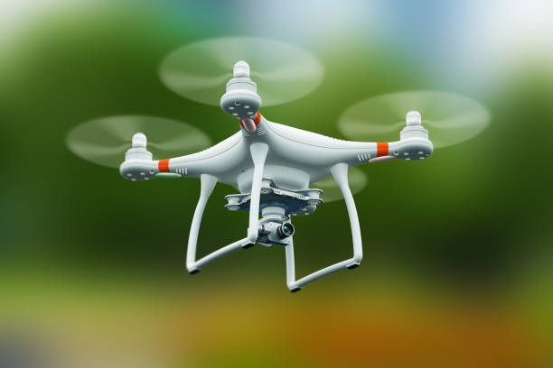

Machine Learning Algorithm Integration

Autonomous navigation in unstructured and GPS-denied environments is one of the primary challenges in modern UAV (Unmanned Aerial Vehicle) research. This project focuses on the integration of machine learning algorithms into the flight control system of a quadcopter to enable intelligent collision avoidance and path optimization.
The guidance system is built on a Deep Q-Network (DQN) framework. The state space includes 3D coordinates, orientation (Euler angles), and distance readings from onboard LiDAR sensors. The reward function encourages maintaining a safe distance from obstacles while minimizing the time to the target coordinate.
To bridge the gap between simulation and reality, we utilized the AirSim simulator. The agent was trained over 10,000 episodes in various lighting and weather conditions. The resulting model showed a 94% success rate in navigating through dense forest environments without manual intervention. This research demonstrates the feasibility of end-to-end learning for complex guidance tasks.